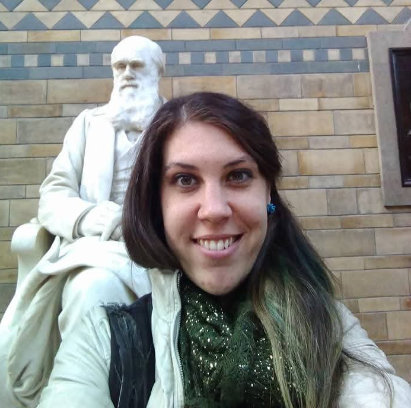

Dr. Esther Manzanares Ubeda
Honorary Research Affiliate NHM
About me
I am a cross-disciplinary palaeontologist with expertise in three main areas: dental histology, chondrichthyan dental evolution, and the biodiversity and biogeography of Mesozoic and Cenozoic chondrichthyan faunas.
Through these disciplines, I explore how chondrichthyan dentitions have evolved across geological time.By combining traditional palaeontological methods with cutting-edge imaging technologies, my work uncovers the evolutionary mechanisms that enabled cartilaginous fishes to survive major climate shifts and mass extinction events.
Much of my research focuses on the Mesozoic Era (a pivotal period when modern groups of sharks and rays first emerged) to better understand how past environmental crises can inform the future of marine biodiversity. Currently, my primary research line investigates the dental evolution and structure of holocephalans.
Research Gallery